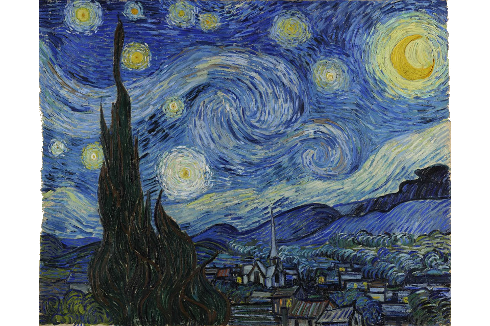
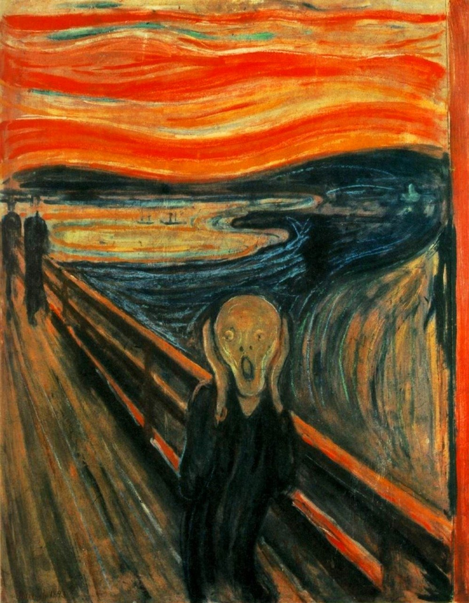

Parte de História da Arte
A história da arte remonta à pré-história, quando nossos antepassados começaram a criar pinturas e esculturas em cavernas.
Desde então, a arte tem evoluído e se desenvolvido através dos tempos, refletindo as mudanças culturais, sociais e políticas de cada época.
Na Grécia Antiga, a arte foi usada para celebrar os deuses e a beleza idealizada do corpo humano.
Durante a Idade Média, a arte religiosa era dominante e muitas obras de arte foram encomendadas pela Igreja.
No Renascimento, a arte voltou a celebrar a beleza humana, com artistas como Leonardo da Vinci e Michelangelo produzindo obras-primas que ainda são apreciadas hoje.
Durante a era moderna, a arte tornou-se cada vez mais experimental, com movimentos como o impressionismo, expressionismo e cubismo, que buscavam novas formas de representar o mundo.
O século XX também viu o surgimento da arte contemporânea, que inclui uma ampla variedade de estilos e técnicas.
Hoje, a arte continua a ser uma forma importante de expressão cultural, e muitos artistas estão usando novas tecnologias para criar obras de arte inovadoras.
A história da arte é vasta e complexa, mas é uma parte fundamental da história da humanidade e da nossa evolução como sociedade.
Divisões por estilo
Renascimento:
Barroco:
Rococó:
Neoclassicismo:
Romantismo:
Impressionismo:
Expressionismo:
Cubismo:
Surrealismo:
Arte contemporânea:
o Renascimento foi um movimento artístico e cultural que se originou na Itália no século XIV e se espalhou por toda a Europa. Foi caracterizado pelo interesse em ideias humanistas, pelo realismo, pela perspectiva e pelos retratos realistas.
O Barroco foi um movimento artístico que surgiu no século XVII, caracterizado pela grandiosidade, dramatismo, emoção e ênfase na dinâmica e no movimento.
O Rococó foi um estilo de arte que se desenvolveu na França no século XVIII. Ele é conhecido por sua elegância, ornamento e ênfase na vida cotidiana e no lazer.
O Neoclassicismo foi um movimento artístico que surgiu no século XVIII, caracterizado pela inspiração na arte e na cultura da Grécia e de Roma antigas, enfatizando a simetria, a proporção e a clareza.
O Romantismo foi um movimento artístico que surgiu no final do século XVIII, caracterizado pela ênfase na emoção, na natureza, no individualismo e na imaginação.
O Impressionismo foi um movimento artístico que surgiu na França no final do século XIX, caracterizado pela ênfase na luz e na cor, na observação direta da natureza e na captura de momentos fugazes.
O Expressionismo foi um movimento artístico que surgiu no início do século XX, caracterizado pela ênfase na emoção, no individualismo e na subjetividade, frequentemente representando o mundo de forma distorcida ou exagerada.
O Cubismo foi um movimento artístico que surgiu no início do século XX, caracterizado pela representação de objetos tridimensionais em formas geométricas abstratas e pela ênfase na perspectiva múltipla.
O Surrealismo foi um movimento artístico que surgiu na década de 1920, caracterizado pela exploração do mundo dos sonhos, da imaginação e do subconsciente, frequentemente representando imagens absurdas e perturbadoras.
A arte contemporânea é um termo amplo que se refere a uma ampla variedade de estilos e tendências artísticas que surgiram desde meados do século XX até os dias atuais. Ela abrange uma ampla gama de formas de arte, incluindo pintura, escultura, instalações, performance, vídeo arte e muitas outras.
Principais Autores
Leonardo da Vinci (1452–1519):
Michelangelo (1475–1564):
Raphael (1482–1520):
Vincent van Gogh (1853–1890):
Picasso (1881–1973):
Leonardo da Vinci foi um dos artistas mais renomados do Renascimento italiano, conhecido por suas obras-primas, como a "Mona Lisa" e "A Última Ceia". Além de ser um grande artista, ele era um polímata, ou seja, uma pessoa que possui conhecimentos em diversas áreas do saber, incluindo arte, ciência e filosofia.
Michelangelo foi outro artista renascentista italiano, conhecido por suas obras em escultura, pintura e arquitetura. Suas obras-primas incluem a escultura em mármore "David" e a pintura do teto da Capela Sistina, em Roma. Michelangelo foi elogiado por sua habilidade em retratar figuras humanas com realismo e emoção, bem como por sua técnica de escultura em que ele esculpia diretamente a partir do bloco de mármore.
Rafael foi um terceiro artista renascentista italiano conhecido por suas pinturas em grande escala e sua habilidade em retratar emoções humanas. Suas obras-primas incluem "A Escola de Atenas" e "A Transfiguração". Rafael é admirado por sua habilidade em criar composições harmoniosas, que combinam figuras humanas em poses graciosas e naturais.
Vincent van Gogh foi um pintor holandês que é conhecido por seu estilo pós-impressionista, caracterizado por pinceladas ousadas e cores intensas. Ele produziu mais de 2000 obras de arte durante sua vida, incluindo "A Noite Estrelada" e "Girassóis". Van Gogh lutou com problemas de saúde mental ao longo de sua vida, o que influenciou sua obra de arte e tornou-o um ícone da arte expressionista.
Pablo Picasso foi um artista espanhol que é considerado um dos mais influentes do século XX. Ele foi pioneiro em movimentos artísticos como o cubismo e o surrealismo, e sua obra de arte inclui uma ampla variedade de estilos e técnicas. Suas obras-primas incluem "Les Demoiselles d'Avignon" e "Guernica". Picasso é admirado por sua habilidade em desafiar as convenções da arte e em criar formas abstratas que desafiam a percepção do espectador.
Galeria principal
Mona Lisa

A Mona Lisa, também conhecida como La Gioconda, é uma das pinturas mais famosas e icônicas de todos os tempos.
Ela foi criada por Leonardo da Vinci no início do século XVI, e representa uma mulher sorridente, com um fundo paisagístico e um olhar enigmático.
A pintura tem sido objeto de muita especulação e análise ao longo dos anos, e é um ícone da arte renascentista.
A Criação de Adão

A Criação de Adão é uma das pinturas mais famosas de Michelangelo, que é parte do teto da Capela Sistina, no Vaticano.
A pintura representa Deus dando vida a Adão, o primeiro homem, com um toque divino.
A imagem é uma das mais icônicas da história da arte, e é vista como um testemunho do poder criativo de Deus e do homem.
A Noite Estrelada

A Noite Estrelada é uma pintura de Vincent van Gogh, criada em 1889.
A obra representa uma paisagem noturna com um céu turbulento e estrelado, e uma pequena cidade abaixo.
A pintura é vista como uma das mais icônicas da arte moderna, e é conhecida por sua técnica impressionista e uso de cores vibrantes.
É considerada uma obra-prima da arte e um ícone da cultura popular.
O grito

O Grito é uma série de pinturas criadas por Edvard Munch no final do século XIX e início do século XX.
A pintura representa uma figura solitária, com um rosto contorcido de angústia, e um fundo tumultuoso.
É vista como uma das representações mais poderosas da ansiedade e desespero humano, e é considerada um ícone do movimento expressionista.
Última Ceia

A Última Ceia é uma pintura icônica criada por Leonardo da Vinci no final do século XV, que representa a cena bíblica da última ceia de Jesus Cristo com seus apóstolos antes da crucificação.
A pintura é uma obra-prima do Renascimento, e é reconhecida por sua técnica e composição, que dão vida aos personagens e capturam a emoção do momento.